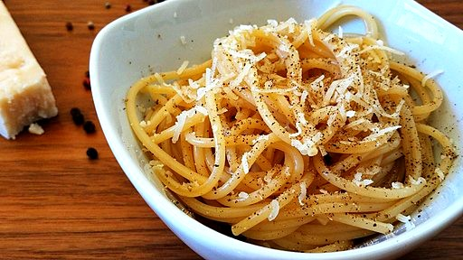

Magna Pasta
Pasta cacio e pepe

Description
Cacio e pepe (Pasta cacio e pepe) is an exquisite first course typical of Lazio cuisine; based on very
few ingredients: Pasta (usually Tonnarelli or Spaghetti), Pecorino Romano d.o.p. and freshly ground black
pepper. According to a specific technique, the famous "pasty pecorino cream" is made, to which
the Spaghetti cacio e pepe will be whipped; which will be literally enveloped in a creamy coat of cheese!
An amazing goodness born by the shepherds of the Roman countryside during their transhumance activities.
Today it has become a true staple of Roman and Italian cuisine, beloved all over the world.
Ingredients
- 320gr of Spaghetti (or Tonnarelli)
- 2 to 3 tablespoons of black peppercorns
- 200gr pecorino romano cheese d.o.p.
- salt
Steps
- First prepare the pepper stock: In a saucepan with 500 ml of water add 1 tablespoon whole peppercorns (I recommend enclosing them inside a nylon net or tea utensil to avoid finding them whole after everywhere) in the meantime put water to boil the pasta with salt.
- Then separately grind with a pestle the rest of the pepper.
- Finally grate the pecorino cheese and add 1 tablespoon of warm/fresh pepper stock ( not boiling I recommend ) this step is essential so that the pecorino paste "does not tear" you will have to obtain a grainy, compact and not liquid pecorino paste.
- Then cook the Spaghetti halfway through.
- In a pan toast half of the ground pepper for 30 seconds, add 1 ladle of pepper stock and let it boil for 2 minutes.
- Then add directly to the pan with the pepper, the half-cooked spaghetti and add just enough spaghetti cooking water to risotto them.
- Continue adding a little cooking water until they are creamy and perfectly al dente.
- Finally, when they are perfectly al dente and very creamy, so with a nice velvety base turn off the heat and remove the pan from the heat by letting the temperature drop for a moment 30 seconds, continuing to saute.
- Then add the pecorino paste and turn very well. this will melt on the spaghetti. Only if necessary add a pinch of warm spaghetti cooking water.
- Serve with a generous grinding of pepper!
Here is your pasta cacio e pepe ready!